생산자동화기능사 (2013-10-12 기출문제)
1과목: 기계가공법 및 안전관리(대략구분)
1. CNC 선반에서 내, 외경 황삭 사이클에 적용되는 G 코드는?
- G71
- G90
- G94
- G98
(정답률: 61%)

2. 가는 홈붙이 날을 가진 커터로, 가공된 기어의 면을 매끄럽고 정밀하게 다듬질하는 가공은?
- 기어 셰이빙
- 밀링 가공
- 래핑
- 선반 가공
(정답률: 86%)
3. 수평(Horizontal) 및 만능밀링머신(Universal Milling Machine)의 크기를 표시한 것 중 틀린 것은?
- 테이블의 크기
- 테이블의 이동거리
- 아버(Arbor)의 크기
- 스핀들 중심선에서부터 테이블 윗면까지의 최대거리
(정답률: 72%)
4. 나사의 접시머리가 들어갈 구멍을 가공하는 것으로서 구멍의 일단을 원추형으로 확대하는 작업은?
- 카운터 싱킹
- 스폿 페이싱
- 카운터 보링
- 탭핑
(정답률: 74%)
5. 절삭유의 구비조건으로 틀린 것은?
- 방청, 방식성이 좋을 것
- 인화점, 발화점이 낮을 것
- 냉각성이 충분할 것
- 장시간 사용해도 변질하지 않을 것
(정답률: 87%)
6. 옆에 있는 작업자가 감전이 되었을 때 우선 처리해야 할 안전조치 방법은?
- 환자의 상태를 확인한다.
- 물을 부어 몸을 차게 한다.
- 인공호흡을 시킨다.
- 스위치(전원)을 끊어야 한다.
(정답률: 91%)
7. 선반 가공에서 대형이고 형상이 복잡한 가공물을 고정할 때 사용하는 방법은?
- 방진구에 의한 방법
- 맨드릴에 의한 방법
- 파이프 센터에 의한 방법
- 면판에 의한 방법
(정답률: 58%)
8. 결합도가 높은 숫돌에서 알루미늄 같은 연한 금속을 연삭할 때 가장 많이 나타나는 현상은?
- 드레싱
- 트루잉
- 무딤
- 눈 메움
(정답률: 63%)
9. 주철제 랩으로 경화강을 래핑할 때 사용하는 래핑액은?
- 유류
- 물
- 그리스
- 플라스틱
(정답률: 59%)
10. 지름이 120mm, 길이가 300mm인 탄소강의 봉을 초경합금 바이트로 절삭 깊이 1.8mm, 이송 0.35mm, 회전수 398r/min(=rpm)의 조건으로 선반 가공할 때, 절삭속도는 몇 m/min 인가?
- 375
- 150
- 2.245
- 0.437
(정답률: 55%)
2과목: 기계제도(대략구분)
11. 다음 선의 종류 중에서 선이 중복되는 경우 가장 우선하여 그려야 하는 것은?
- 외형선
- 중심선
- 숨은선
- 치수보조선
(정답률: 85%)
12. 가공 방법의 표시 방법 중 M은 어떤 가공법인가?
- 선반 가공
- 밀링 가공
- 평삭 가공
- 주조
(정답률: 90%)
13. 기계 제도에서 굵은 1점 쇄선을 사용하는 경우로 가장 적합한 것은?
- 대상물의 보이는 부분의 겉모양을 표시하기 위하여 사용한다.
- 치수를 기입하기 위하여 사용한다.
- 도형의 중심을 표시하기 위하여 사용한다.
- 특수한 가공 부위를 표시하기 위하여 사용한다.
(정답률: 74%)
14. 그림과 같은 기하공차 기입틀에서 첫째구획에 들어가는 내용은?
- 공차값
- MMC 기호
- 공차의 종류 기호
- 데이텀을 지시하는 문자 기호
(정답률: 76%)
15. 비경화 테이퍼핀의 호칭 지름을 나타내는 부분은?
- 가장 가는 쪽의 지름
- 가장 굵은 쪽의 지름
- 중간 부분의 지름
- 핀 구멍 지름
(정답률: 54%)
16. 구멍
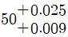
에 조립되는 축의 치수가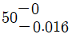
이라면 이는 어떤 끼워맞춤인가?- 구멍 기준식 헐거운 끼워맞춤
- 구멍 기준식 중간 끼워맞춤
- 축 기준식 헐거운 끼워맞춤
- 축 기준식 중간 끼워맞춤
(정답률: 52%)
17. 그림과 같은 입체도에서 화살표 방향이 정면일 때 우측면도로 적합한 것은?
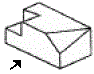
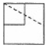
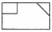
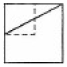
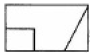
(정답률: 87%)
18. KS 기어 제도의 도시방법 설명으로 올바른 것은?
- 잇봉우리원은 가는 실선으로 그린다.
- 피치원은 가는 1점 쇄선으로 그린다.
- 이골원은 가는 2점 쇄선으로 그린다.
- 잇줄방향은 보통 2개의 가는 1점 쇄선으로 그린다.
(정답률: 61%)
19. 다음 중 기계제도에서 각도 치수를 나타내는 치수선과 치수 보조선의 사용 방법으로 옳은 것은?
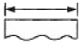
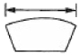
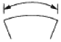
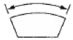
(정답률: 77%)
20. 공유압 기호에서 기호의 표시방법과 해석에 관한설명으로 틀린 것은?
- 기호는 기기의 실제 구조를 나타내는 것은 아니다.
- 기호는 원칙적으로 통상의 운휴상태 또는 기능적인 중립 상태를 나타낸다.
- 숫자를 제외한 기호 속의 문자는 기호의 일부분이다.
- 기호는 압력, 유량 등의 수치 또는 기기의 설정값을 표시하는 것이다.
(정답률: 48%)
21. 안지름이 20cm, 피스톤 속도가 5m/sec일 때 필요한 유량은 분당 몇 L/min인가?
- 314
- 500
- 132
- 157
(정답률: 38%)
22. 다음 안전제어 및 검사기능 등에 사용되는 AND 밸브로 가장 적합한 것은?
- 체크 밸브
- 셔틀 밸브
- 2압 밸브
- 시퀀스 밸브
(정답률: 69%)
23. 다음 중 유압 작동유의 구비조건이 아닌 것은?
- 비압축성이어야 한다.
- 열을 방출시키지 않아야 한다.
- 장시간 사용하여도 화학적으로 안정하여야 한다.
- 적절한 점도가 유지되어야 한다.
(정답률: 72%)
24. 다음 중 압력제어밸브에 속하지 않는 것은?
- 감압 밸브
- 시퀀스 밸브
- 릴리프 밸브
- 교축 밸브
(정답률: 65%)
25. 공압실린더의 공급되는 공기의 유량을 제어하는 방식을 무엇이라 하는가?
- 미터아웃방식
- 미터인방식
- 블리드온방식
- 블리드오프방식
(정답률: 70%)
26. 유압 동력부 펌프의 송출압력이 60kgf/cm2이고, 송출유량이 30L/min일 때 펌프 동력은 몇 kW인가?
- 2.94
- 3.94
- 4.49
- 5.49
(정답률: 54%)
27. 유압 펌프 중에서 비용적형 펌프에 해당하는 것은?
- 터빈 펌프
- 기어 펌프
- 베인 펌프
- 피스톤 펌프
(정답률: 45%)
28. 공압장치를 구성하는 요소 가운데 공기 중의 먼지나 수분을 제거하는 목적으로 사용되는 것은?
- 공기 압축기
- 애프터 쿨러
- 공기 탱크
- 공기 필터
(정답률: 69%)
29. 공기압축기의 종류 중 터보형 압축기는?
- 베인식
- 나사식
- 피스톤식
- 원심식
(정답률: 60%)
30. 다음 실린더의 종류에 대한 설명 중 잘못된 것은?
- 양 로드형 실린더 : 양방향 같은 힘을 낼 수 있다.
- 충격 실린더 : 빠른속도(7~10m/s)를 얻을 때 사용된다.
- 탠덤 실린더 : 다단튜브형 로드를 가져 긴 행정에 사용된다.
- 쿠션 내장형 실린더 : 스트로크 끝부분의 충격이 완화되어야 할 때 사용된다.
(정답률: 68%)
3과목: 메카트로닉스 일반(대략구분)
31. 다음 중 AND 회로의 논리식으로 맞는 것은?
- SL=PB1·PB2
- SL=PB1+PB2
- SL=PB1÷PB2
- SL=PB1-PB2
(정답률: 73%)
32. 무인 반송차는 공장 바닥면에 자성도료로 칠해진 반송 경로나 바닥 밑에 설치된 유도용 전선 등과 신호를 주고 받으면서 공작물, 공구, 고정구 등의 일감을 반송하는 대차인데 무인 반송차의 특징에 해당되지 않는 것은?
- 레이아웃의 자유도가 작다.
- 충돌, 추돌 회피 등 자기제어가 가능하다.
- 정지 정밀도를 확보할 수 있다.
- 자기진단과 컴퓨터 교신이 가능하다.
(정답률: 71%)
33. 어떤 시스템의 가열히터가 전압 100V, 소비전력 500W일 때 저항의 값은 얼마인가?
- 5Ω
- 0.2Ω
- 10Ω
- 20Ω
(정답률: 54%)
34. 다음 중 되먹임제어에서 꼭 있어야 할 장치는?
- 응답속도를 빠르게 하는 장치
- 안정도를 좋게 하는 장치
- 응답속도를 느리게 하는 장치
- 입력과 출력을 비교하는 장치
(정답률: 84%)
35. PLC회로도 프로그램 방식 중 접점의 동작 상태를 회로도상에서 모니터링 할 수 있는 것은?
- 명령어 방식
- 블록선도 방식
- 래더도 방식
- 플로차트 방식
(정답률: 76%)
36. 목표값이 시간에 따라 변하며, 이 변화하는 목표값에 제어량을 추종하도록 하는 되먹임제어를 무엇이라 하는가?
- 정치제어 (Constant-value Control)
- 추종제어 (Follow-up Control)
- 공정제어 (Process Control)
- 자동조정 (Automatic Regulation)
(정답률: 77%)
37. 센서용 검출 변환기에서 제백효과 (Seebeck Effect)를 이용한 것은 어느 것인가?
- 압전형
- 열기전력형
- 광전형
- 전기화학형
(정답률: 75%)
38. 자동화시스템의 주요 3요소에 속하지 않는 것은?
- 입력부
- 출력부
- 전원부
- 제어부
(정답률: 83%)
39. PLC 시스템에서 교류 부하용 무접점 출력으로 사용되는 반도체로 가장 적합한 것은?
- 트랜지스터
- 다이액
- 트라이액
- 릴레이
(정답률: 47%)
40. 다양한 제품수요의 변화에 대처할 수 있도록 가공공정의 변환이 용이하도록 한 자동화시스템으로서 유연생산시스템을 의미하는 것은?
- CAE
- LCA
- FMA
- FMS
(정답률: 82%)
41. 폐회로 제어시스템의 오차에 대한 식으로 옳은 것은?
- 오차=목표값-실제값
- 오차=외란+실제값
- 오차=제어출력+에너지
- 오차=외란+제어출력
(정답률: 86%)
42. 어떤 신호가 입력되어 출력 신호가 발생한 후에는 입력 신호가 제거되어도 그 때의 출력 상태를 계속 유지하는 제어방법은?
- 파일럿 제어
- 메모리 제어
- 조합 제어
- 프로그램 제어
(정답률: 78%)
43. 자동화의 목적과 거리가 가장 먼 것은?
- 생산성이 향상된다.
- 제품의 품질이 균일화되어 불량품이 감소한다.
- 적정한 작업 유지를 위한 원자재, 연료 등이 증가한다.
- 위험한 사고의 방지가 가능하다.
(정답률: 88%)
44. 로봇 운전에 대한 안전사항으로 틀린 것은?
- 로봇을 가동시키기 전에 작업 반경 내에 사람이 없는지 확인한다.
- 로봇의 가반 중량은 추천사항이므로 약간 넘겨도 괜찮다.
- 로봇의 동작상태가 불안하면 일단 비상스위치를 누른다.
- 로봇의 작업 범위에는 위험 표지판을 설치한다.
(정답률: 88%)
45. 다음 산업용 로봇의 입력 정보 교시에 따른 분류가 아닌 것은?
- 가변 시퀀스 로봇
- 수치제어 로봇
- 다관절 로봇
- 적응제어 로봇
(정답률: 61%)
46. 아래 회로도와 타임차트는 무엇을 나타내는가?
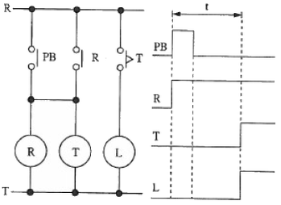
- 지연 동작 회로
- 정지 우선 회로
- 인터록 회로
- 일정시간 동작 회로
(정답률: 59%)
47. 회로의 종류 중 외부신호접점이 닫혀있는 동안 타이머가 접점의 개폐를 반복하는 회로로 교통신호기 등 일정의 동작을 반복하는 장치에 이용하는 회로는?
- 펄스 발생회로
- 플리커 회로
- 플립플롭회로
- 인터록회로
(정답률: 65%)
48. 누전차단기의 사용상 주의사항에 관한 설명으로 옳지 않은 것은?
- 테스트 버튼을 눌러 작동상태를 확인한다.
- 전원측과 부하측의 단자를 올바르게 설치한다.
- 진동과 충격이 많은 장소에 설치하여도 무관하다.
- 누전 검출부에 반도체를 사용하기 때문에 정격전압을 사용한다.
(정답률: 89%)
49. 외부의 입력에 의하여 릴레이 작동 후 릴레이의 a접 점을 통하여 회로를 유지시켜, 입력을 제거하여도 계속 작동되는 시퀀스 회로는?
- On 회로
- 타이머 회로
- 자기유지 회로
- On/Off 릴레이 회로
(정답률: 85%)
50. 외부의 힘(외력)이 없을 때는 닫혀 있다가 외력이 가해지면 열리는 접점은?
- a접점
- b접점
- c접점
- e접점
(정답률: 80%)
51. 출력의 한 곳은 전압이 나오고(1이 되고), 다른 곳은 전압이 나오지 않으며(0이 되며), 입력신호에 의하여 상태가 바뀌는 회로로서 입력신호가 제거된 후에도 그 상태를 유지하는 회로는?
- 플립플롭 회로
- 자기유지 회로
- 심호검출 회로
- 직렬신호 회로
(정답률: 58%)
52. JK플립플롭의 J단자와 K단자를 한 개의 단자로 묶어 한 개의 입력으로 만든 것을 무엇이라 하는가?
- T 플립플롭
- D 플립플롭
- 마스터-슬래이브 플립플롭
- RS 플립플롭
(정답률: 54%)
53. 다음 논리기호의 식으로 옳은 것은?
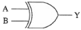
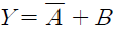
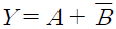
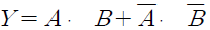
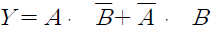
(정답률: 50%)
54. 다음 논리회로는 무엇을 나타낸 것인가?
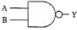
- OR 회로
- AND 회로
- NOR 회로
- NAND 회로
(정답률: 70%)
55. 입력신호에 대한 출력 신호를 비교하는 제어방식은?
- 오픈 루프제어
- On/Off 제어
- 불완전 제어
- 되먹임 제어
(정답률: 79%)
56. 다음 그림은 무슨 회로인가?
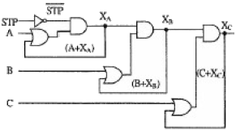
- 인터록 회로
- 시간지연 회로
- 순차동작 회로
- 자기유지 회로
(정답률: 66%)
57. 시퀀스제어에서 문자 기호와 그 해당 용어 및 명칭으로 틀린 것은? (문제 오류로 실제 시험에서는 2, 4번이 정답처리 되었습니다. 여기서는 2번을 누르면 정답 처리 됩니다.)
- OPM : 조작용 전동기
- LVS : 나이프 스위치
- COS : 전환 스위치
- MC : 배선용 차단기
(정답률: 81%)
58. 다음 시퀀스제어 회로도의 동작설명으로 옳은 것은? (단, GL은 녹색램프이고, RL은 적색램프이다)
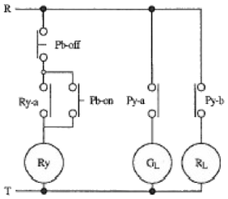
- R과 T에 전원만 넣으면 녹색 램프가 켜진다.
- R과 T에 전원만 넣으면 적색 및 녹색 램프가 동시에 켜진다.
- Pb-on 스위치를 누르는 동안만 녹색 램프가 켜진다.
- Pb-on 스위치를 한 번만 눌렀다 놓아도 녹색램프는 켜진 상태로 유지된다.
(정답률: 63%)
59. 다음 불 대수 중에서 옳지 않은 것은?
- 1 + A = 1
- Aㆍ1 = A
- 0ㆍA = 1
- AㆍA = A
(정답률: 78%)
60. 다음 시퀀스 기호 중 b접점이 아닌 것은?
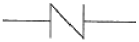
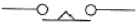
(정답률: 81%)
G71은 CNC 선반에서 내, 외경 황삭 사이클에 적용되는 G 코드입니다. 이 코드는 CNC 선반에서 가공할 부품의 직경과 길이를 입력하여 가공하는 사이클입니다. 이 코드를 사용하면 부품의 직경과 길이를 입력하고, 가공 시작 위치를 지정하여 자동으로 가공이 이루어집니다.
G90은 절대좌표 지정 모드, G94는 분당 주행 길이 지정 모드, G98은 초기면 지정 모드입니다. 이들은 G71과는 다른 기능을 수행하므로 정답이 될 수 없습니다.